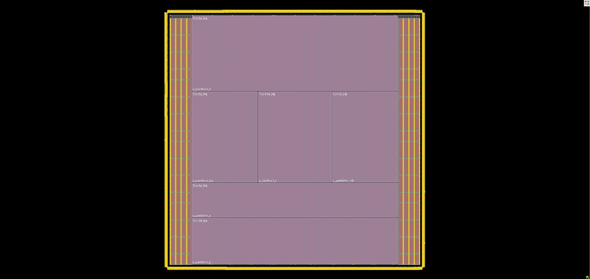

NPU · Physical Design · ASIC
NVIDIA NVDLA RTL-to-GDSII
Implemented and evaluated an open-source NVIDIA deep-learning accelerator through synthesis, timing analysis, power analysis, floorplanning, placement, routing, and physical verification in a 12-nm FinFET flow.
NVDLA (NVIDIA Deep Learning Accelerator) is an open-source hardware accelerator architecture for deep learning inference. This project took the open-source RTL and carried it through a full physical design flow in a 12-nm FinFET process, rather than stopping at synthesis or simulation.
The work spanned synthesis, timing analysis, and power analysis at the netlist level, then moved into physical implementation: floorplanning, placement, routing, and physical verification, treating each step's timing and congestion feedback as an input to the next.
Because NVDLA is a substantially larger and more structurally complex design than a typical class-project block, a significant part of the work was in managing the flow itself — partitioning the problem, debugging RTL-to-netlist mismatches, and iterating on timing closure across a design with many more instances and nets than a small benchmark circuit.
| Design | NVIDIA Deep Learning Accelerator (NVDLA), open-source |
|---|---|
| Process node | 12 nm FinFET |
| Flow stages | Synthesis · Timing analysis · Power analysis · Floorplanning · Placement · Routing · Physical verification |
Floorplan
01 / PHYSICAL DESIGN
The design was partitioned into separate placement regions before detailed placement, each closed independently against its own utilization target (TU) before final assembly — visible here as the six labeled partitions inside the core area, bounded by the I/O pad ring and power distribution rings.
Flow
02 / STAGESSynthesis
Mapping the open-source NVDLA RTL to a 12-nm FinFET standard cell library.
Timing & power analysis
Characterizing netlist-level timing paths and power at the block level.
Floorplanning
Partitioning and placing macro and logic regions across the die area.
Placement & routing
Detailed placement and routing of standard cells and interconnect.
Physical verification
Checking the implemented layout for design-rule and connectivity correctness.